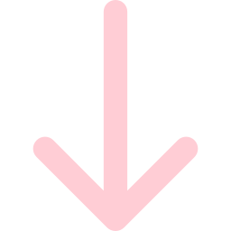

freecodecamp . codewars . github . carousel
- hola
- bonjour
- salaam
- merhaba
-
"hello, world!"
-
'What I am attempting to do, in an overall sense, can be called `sound design'. This includes the adjustment and regulation of sounds which are proper to an environment... 'Sound design' doesn't just mean simply decorating with sounds. We should have a more conscious attitude toward the sounds – other than music —that we listen to.'
Satoshi Ashikawa, 1982 -
Like Ashikawa, writing about music in the liner notes for his 1982 LP 'Wave Notation', I believe we should have a more conscious attitude to technology. I believe in the radical power of technology to create options for people and technology being controlled by broad masses of people, rather than being designed top down. I'd like to see social computing - changing our relationship to technology so people of diverse abilities and backgrounds can come together and encourage popular knowledge of technology.
-
Earlier this year I left my job at an international charity, having worked in the non-profit sector for many years. As part of leaving my job I did a short introduction to front end web development course over the summer at Flatiron School and I haven't looked back since. Although apprehensive at first, I can honestly say it's been the best decision I've made. I've thoroughly enjoyed learning to code and the community I've met and made along the way, from going to weekly meetups at Codebar to the continued support of Black Girl Tech. I am most interested in joining the course at Founders and Coders as a strong believer in it's ethos - it's peer-led and accessible approach to learning, the Tech for Better programme and for the like-minded people I hope to meet and work with.
I feel extremely grateful so far and am very excited to continue my journey as a developer! -
A few things I've made:
Random Tennis Game
Wedding Invite Previewer